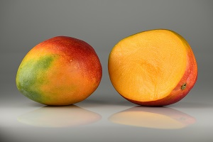

Mango is a sweet and delicious tropical fruit that is loved by people in many countries. It usually has a yellow, orange, or green skin and soft, juicy flesh inside. Mangoes contain vitamins, minerals, and antioxidants that can be beneficial for the body. They can be eaten fresh or used in juices, smoothies, desserts, and many other foods.
